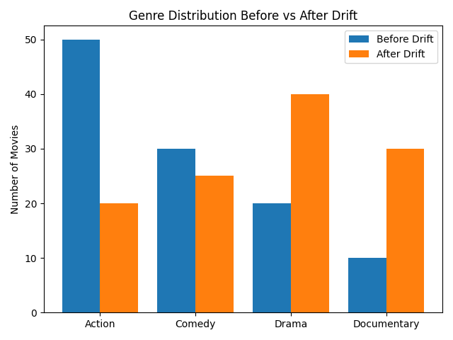
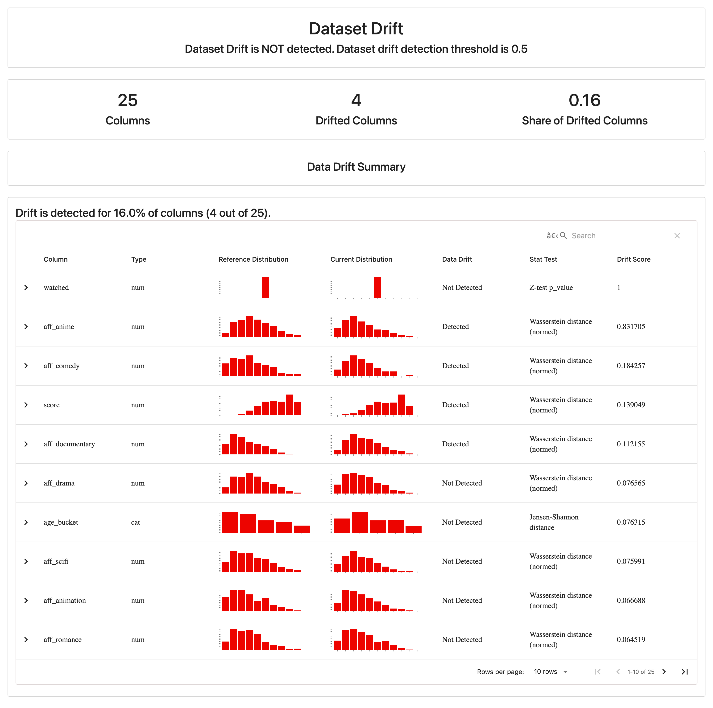

🎬 Catching Data Drift in Movie Recommendations with Evidently AI
How lightweight monitoring reveals shifting user tastes and keeps recommendations relevant.
Introduction
Recommendation systems are at the heart of modern movie streaming platforms. They decide which titles appear on a user’s home screen, which genres are promoted, and ultimately how long viewers stay engaged. These systems rely on machine learning models trained on historical user behavior—what people watched, skipped, or rated highly. But the challenge is that user preferences are never static. A blockbuster thriller may dominate one month, while family‑friendly animated shows surge the next. Seasonal trends, cultural events, and even global circumstances can shift what audiences want to see.
In production ML systems, this phenomenon is known as data drift. Data drift occurs when the statistical properties of input data change over time, making the model’s assumptions less valid. For a streaming service, drift means that recommendations can quickly become outdated, irrelevant, or even frustrating to users. Left unchecked, this silent degradation erodes trust in the platform and increases churn.
Detecting and responding to drift is therefore a critical part of MLOps—the discipline of running machine learning in production. Unlike the controlled environment of a notebook, production systems must continuously monitor data pipelines, track model performance, and adapt to evolving realities. Without monitoring, teams risk deploying models that look fine on paper but fail in practice.
The complexity of streaming platforms adds another layer to the challenge. Millions of users interact with content daily, generating vast amounts of behavioral data. This data is noisy, diverse, and constantly changing. A single viral release can skew viewing patterns overnight, while demographic shifts may gradually reshape long‑term preferences. Models must be resilient enough to handle both sudden shocks and slow, subtle changes.
Moreover, recommendation systems are not just technical artifacts—they directly influence business outcomes. Better recommendations mean higher watch times, stronger customer loyalty, and increased revenue. Poor recommendations, on the other hand, can push users toward competitors. Monitoring drift is therefore not only a technical necessity but also a strategic imperative for streaming companies.
In this post, I explore how Evidently AI, an open‑source monitoring tool, can help address this challenge. Using a simulated movie‑streaming scenario, I demonstrate how Evidently detects shifts in user preferences, surfaces feature drift, and provides actionable insights for retraining workflows. The goal is to show how lightweight monitoring can keep recommendations relevant and ensure that machine learning systems remain aligned with the dynamic world of entertainment.
Problem addressed
The core challenge is data drift: when user behavior evolves, the recommendation model no longer reflects current preferences. For streaming platforms, this means irrelevant suggestions, lower engagement, and potential churn. Monitoring drift ensures models remain aligned with reality.
Practical use in movie-streaming scenario
I simulated a streaming environment where user logs capture region, device, age group, and genre preferences. A baseline model predicted watch probability from these features and produced reference predictions on historical logs.
To emulate changing tastes, I shifted the genre distribution—specifically, a surge in interest for animated shows—creating a current dataset. Evidently AI compared the reference and current datasets and flagged drift in genre features and prediction scores.
In a real platform, this setup enables engineers to detect misalignment early, trigger retraining when drift exceeds thresholds, and keep recommendations relevant as trends evolve.
Baseline model results
The watch‑probability model predicts whether a user is likely to watch a title based on region, device, age group, and genre affinities.
Baseline performance:
ROC‑AUC: 0.705 PR‑AUC: 0.562
While imperfect, these scores show the model is learning meaningful patterns—enough to demonstrate the importance of drift monitoring.
Simulating drift
To simulate real‑world change, I introduced an increase in interest for animated shows. Comparing the “current” dataset to the “reference,” users became more inclined toward animation.
In production, shifts in content trends or demographics can quickly diminish the relevance of yesterday’s model.

Monitoring with Evidently
I used Evidently’s DataDriftPreset to compare reference vs. current data and generate an HTML dashboard.
from evidently import Report
from evidently.metric_preset import DataDriftPreset
report = Report(metrics=[DataDriftPreset()])
report.run(reference_data=ref_logs, current_data=cur_logs)
report.save_html("data_drift_report.html")Opening the dashboard revealed clear changes:
- Feature drift:
genre_animeandaff_animedistributions shifted significantly. - Prediction drift: The model’s score distribution changed, indicating potential calibration issues.
- Target drift: Watch outcomes differed between reference and current periods.

Analysis
The experiment with Evidently AI involved several layers of analysis:
- Diagnostic analysis: Using Evidently’s drift report to identify whether input features and predictions were shifting compared to the baseline.
- Comparative analysis: Comparing distributions of genres and affinities between the reference and current datasets to highlight changes in user preferences.
- Performance analysis: Evaluating baseline ROC‑AUC and PR‑AUC to understand model behavior before drift.
- Operational analysis: Considering thresholds and triggers to integrate drift detection into production workflows.
Together, these analyses show not only that drift exists, but also how it impacts model reliability and what actions teams can take to maintain relevance in production ML systems.
Strengths, limitations, and lessons learned
Working with Evidently AI in the movie‑streaming scenario revealed both its advantages and areas for improvement:
- Strengths:
- Easy Python integration and quick, interpretable HTML reports.
- Holistic view across feature, prediction, and target drift.
- Clear visuals that help align engineers and stakeholders.
- Limitations:
- Primarily diagnostic—does not prescribe retraining strategies out of the box.
- Static dashboards unless connected to monitoring systems for alerts.
- Scaling to very large datasets may require sampling or cloud‑based pipelines.
- Lessons learned:
- Models can degrade silently even when headline metrics look stable—monitoring is essential.
- Drift detection is most effective when paired with automated retraining and validation pipelines.
- Operational thresholds (e.g., drift share > 0.3) provide a practical guardrail for action.
# Programmatic summary example
summary = report.as_dict()
drifted = summary["metrics"][0]["result"]["data_drift"]["dataset_drift"]
drift_share = summary["metrics"][0]["result"]["data_drift"]["drift_share"]
print(f"Dataset drift: {drifted}, drift share: {drift_share:.2f}")Conclusion
Continuous monitoring is not just a technical add‑on—it is the backbone of reliable production ML systems. In the context of movie streaming, catching drift early ensures that recommendations remain fresh, personalized, and aligned with evolving user interests. Without such monitoring, models can silently degrade, leading to irrelevant suggestions, frustrated users, and ultimately higher churn.
This experiment demonstrates how Evidently AI provides a practical, lightweight solution for detecting drift. By surfacing feature drift, prediction drift, and target drift, Evidently empowers teams to make informed decisions about retraining and recalibration. Its dashboards make complex statistical changes easy to interpret, bridging the gap between data scientists, engineers, and business stakeholders.
The lessons extend beyond streaming. Any domain where data distributions shift—finance, healthcare, retail, or social platforms—faces the same challenge. Monitoring tools like Evidently help organizations maintain trust, transparency, and performance in dynamic environments.